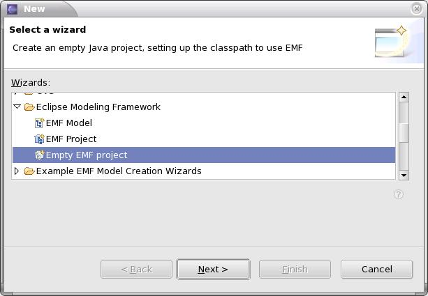
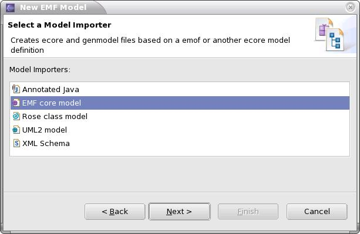

1. Creation of the Network metamodel
2. Configuration and generation thanks to EMF capabilities
2.1. Configuration of the GenModel file
2.2. Generation of the EMF tree structure editor
3. Configuration and generation thanks to Topcased capabilities
3.1. Configuration of the Configurator file
3.2. Generation of the Topcased graphical editor
Introduction :
- creation of the Network metamodel with the graphical Ecore editor
- generation of the EMF tree structure editor
- creation of the configurator for the graphical editor with the EMF tree structure Configurator editor.
- generation of the Network graphical editor, and customization.
- an editor configuration file that will describe the editor plugin
- a diagram configuration file for each diagram
However, this tutorial could be mostly followed, in addition to the "HOW TO EXPORT CONFIGURATORS (from v0.8.x to v0.10.x)" documentation for the third part of this tutorial.
1. Creation of the Network metamodel
First, switch to the Topcased Modeling perspective. Select "Window > Open Perspective > Other..." in the menubar at the top of the workbench
... and in the new Window, select "Topcased Modeling".
This will change the perspective to set up the workbench for modeling. This perspective sets up the different views that are mainly used during modeling, and you will have access to a few shortcuts to create new models.
Then, create a new project that will contains our metamodel. Select "File > New > Project..." and select "Eclipse Modeling Framework > Empty EMF project"
Call your project org.topcased.network.
Create a folder named model in the newly created project. You will save your metamodel here.
Then, you can create the Network metamodel with the graphical Ecore ditor : select the model folder you have just created and "Right Click > New > Ecore Diagram". The wizard is opened and informations are automatically filled. Here you will just have to name your model network .
At this point your workspace should look like this :
- The Navigator that shows your projects, folders and files structure
- The Editing Window and the Palette to edit graphically your model
- The Outline gives you an overview of the model edited
- The Properties View gives you informations on the current selected model object
- The Documentation View which is also synchronized with the current selection
We will create a simple metamodel with the Topcased Ecore graphical editor. At the end of the step, your metamodel will look like this :
Now, let look closely at the different steps necessary to create the metamodel :
1) Create the EClass model objects. To create an EClass, select the corresponding tool in the Palette to activate it, and click on the editing window at the specified location. You will have to do this to create the four EClass that composed our metamodel :
- Network : this represent the root model object of a Network model
- Node : this is an abstract EClass. This is mainly used to aggregate the links of the Network
- Computer : an object that will represent a Computer
- Internet : an object that will represent an Internet access
2) Create the EAttribute model objects. You can create basic EAttributes into an EClass. Select the corresponding tool in the Palette and then click on the EClass on which the EAttribute should be added. Here we will define at least a name EAttribute for the Network and the Computer model object. We will also defined two more EAttributes for the Computer.
- You will have to specify the "EType" property of the EAttribute. You can do this from the Properties View. Select "EString" as the type for the created EAttributes
3) Create the Inheritance links.
- The Computer and the Internet EClass are "subclasses" of the Node EClass, called the "superclass". To update the model with this information, select the Inheritance Link tool in the Palette, and then in the editing window, click first on the "subclass", and then click again on the "superclass". After that, the "ESuper Types" property of the "subclass" should be updated. You can check it in the Properties View.
4) Create the EReference model objects.
- innerNetworks : the innerNetworks represent the fact that a Network may be composed of several Networks. By default the EReference is just a reference to a model object. But here, we want the Node to be added (and not just referenced) inside the Network model object. To do that, you have to change the "containment" property of the EReference in the Properties View and set it to "true". After having done that, you should see a diamond drawn at the source of the EReference.
- nodes : that means that the Network may be composed of many objects of type Node. You will have to change the value of the "containment" EReference as you made it before for the innerNetworks EReference.
- inlinks and outlinks : these EReferences are quite special. In fact they are opposite, this is what we may called a Two-Way EReference. It means that when a link is made between two Nodes, the inlinks reference of the first Node is updated and in the same time, outlinks reference of the second Node updated too. To do that, you have to specify the "EOpposite" property of one of the two EReference (the second is automatically updated) from the Property View.
At this point, we should have a complete metamodel. There are just a few properties to set before finishing. Indeed, we advise you to fill the root EPackage attributes with the following values :
- Name : network
- NsPrefix : network that is the prefix that will be used in the Network models serialized in XML.
- NsURI : http://www.topcased.org/network/1.0 that represents a unique identifier for the namespace to use for the Network models.
Our metamodel should be complete. You can save it with "Ctrl+S" or from the icon in the menu toolbar. Then, we will use the EMF generation capabilities to generate a first tree structure editor for our metamodel.
2. Configuration and generation thanks to EMF capabilities
2.1. Configuration of the GenModel file
The first step is to create the network.genmodel file that will configure what will be generated at the creation of the tree structure editor. Select "New > Other...", and " Eclipse Modeling Framework > EMF Model". Create the file network.genmodel in the same folder as the network.ecore file. Then select "EMF core model" as the Model Importer and reference the network.ecore file as the model file in the next page wizard.
At the end of the wizard, the network.genmodel file is created and open. We might be able to generate directly the EMF tree structure editor associated but we advise you to customize the genModel file to generate all the classes in the same project (By default, everything is generated in three different plugins). Here are the modifications to make :
1) Configure the GenModel (root element) :
- Edit > Edit directory : /org.topcased.network/src to generate classes in the same plugin as those of the model file
- Editor > Editor directory : /org.topcased.network/src to generate classes in the same plugin as those of the model file
- Model > Model Plug-in Class : org.topcased.network.NetworkPlugin
- Tests > Tests Directory : leave it empty not to generate the test classes
- Tests > Test Suite Class : leave it empty not to generate the test classes
2) Configure the GenPackage :
- All > Base Package : enter org.topcased so that in relation with the name of the EPackage, generated classes are inside the org.topcased.network package hierarchy
- Model > Resource Type : select XML to be the default serialization for the models
3) Configure the GenClass :
- Edit > Label Feature : here, you can select the attribute that will be displayed as the label. This feature will be used to show the label that best represent the model object. In our case, ensure that the name attribute is selected for the Network and Computer model objects.
4) Configure the GenFeature : here you can customize the way these properties are displayed in the Properties View. We will leave the default values.
2.2. Generation of the EMF tree structure editor
To generate the tree structure editor, open the network.genmodel file and right click on the GenModel element and select "Generate All".
All classes should be generated in the same project we created at the beginning of this tutorial. We can check the generated editor :
1) Export the plugin in the plugins directory of your Eclipse environment. Right click on your org.topcased.network plugin project, select 'Export...' and choose 'Deployable plug-ins and fragment'. Then a popup window appears, you will have to fill the following informations :
- Choose the plugin org.topcased.network that was generated with EMF
- Export Destination : select "Directory" and browse the eclipse folder
- Compiler options : select 1.4 or higher
- Export options : none selected
2) Restart Eclipse so that the plugin is loaded.
3) Create a new Network model with the wizard. When you have selected a project or a folder, "Right Click > New > Other...", then select "Example EMF Model Creation Wizards > Network Model". Finish the wizard with needed informations and click on finish. The EMF tree structure editor is opened with an empty model. You can check that you can add "Network", "Computer" or "Internet" model object inside a Network model object, ... the Properties View shows you the properties you have defined in your metamodel, ...
4) After having check all of that you can close the editor and delete the created file.
Once you have generated the tree structure editor, let us configure a more convivial editor : a graphical editor.
3. Configuration and generation thanks to Topcased capabilities
3.1. Configuration of the Configurator file
In this section, we will describe how to configure the Configurator file of the Network metamodel we have created in the preceding steps of the tutorial.
The configurator model describes what the editor will look like, which diagrams will be available, which graphical objects will be associated with a model object, the behavior of the graphical objects and links that are possible. Select "New > Others...", and "Example EMF Model Creation Wizards > Configurator Model". The root model object must be an "Editor Configuration".
When you have finished the wizard, the editor is opened. The configurator model only contains the root element "Editor Configuration".
Then, you will have to specify the metamodel file you will work with. Indeed, the objects we will create will depends on the model objects of the metamodel we have created. Right click on the editing window and select "Load Resource..." : then select the corresponding network.genmodel file.
1) EditorConfiguration : this is the root model object of your configurator. You define here common properties of the generated editor and furthermore, you reference here the loaded Genmodel file. So fill the following informations :
- name : Network Editor
- projectName : org.topcased.modeler.network
- prefix : Net
- extension : network
- extensionDiagram : networkdi
- genModel : select the Network GenModel
- pluginVersion : leave the default value : it takes the same version of the ConfiguratorPlugin
2) DiagramConfiguration : define a type of diagram your editor will contain. In our case, the Network graphical editor will contain only one type of diagram. In the root element (EditorConfiguration) you must select "New Child > Diagram Configuration" and then fill the following informations.
- id : org.topcased.modeler.network.netdiagram a unique ID to reference the diagram
- name : Network Diagram a name that will be displayed
- package : netdiagram a java package name
- prefix : Net a prefix to use for creating some classes
- layout : choose the XYLayout : this means that the objects we will add in a Network could be located anywhere in the diagram.
3) ModelObjectConfiguration : then we define all the model objects we will use in the editor. Create a ModelObjectConfiguration for each object of the GenModel file (Network, Node, Computer and Internet) and reference its corresponding GenClass.
4) SimpleObjectConfiguration : we can also define a graphical object that will not be associated with a model object. This is the case of the Link element. Indeed the Link will be used to connect two "Node" through the "inLinks" and the "outLinks" references. So create a SimpleObjectConfiguration and name it Links.
5) DiagramReference : it is used to describe that a diagram may be associated with a particular model object. In our example, we want to be able to associate a diagram with a Network. So, select the ModelObjectConfiguration corresponding to the Network model object, "Right Clic > New Child > DiagramReference". And in the created object, set its property "Diagram" to the only one existing DiagramConfiguration.
6) NodePartConfiguration : describe an object that will be represented as a Node in the diagram. Here are the different NodePartConfiguration you will have to create and their properties that you need to change :
- Network
- Object : select the ModelObjectConfiguration Network
- Type : select the Figure Package
- * childElements : add the Computer and the Internet NodePartConfiguration
- container : true it may contains other nodes
- Node
- Object : select the ModelObjectConfiguration Node
- directEditable : false
- Computer
- Object : select the ModelObjectConfiguration Computer
- Type : select the Figure Computer
- superType : select the NodePartConfiguration associated with the Node model object
- directEditable : false
- Internet
- Object : select the ModelObjectConfiguration Computer
- Type : select the Figure Cloud
- superType : select the NodePartConfiguration associated with the Node model object
- directEditable : false
Remark : for each NodePartConfiguration, you must specify the figure that will represent the graphical object. You can define your own figures and reference them trough an extension point (figureDeclaration) defined in the configurator. In our case, we have used predefined figures.
7) EdgePartConfiguration : describe an object that will be represented as an Edge in the diagram. In our case, we will use it to connect two Node model objects :
- Links
- sourceDecoration : select NONE
- targetDecoration : select ARROW so that an Arrow decoration appears at the end of the link
- defaultRouter : select ObliqueRouter so that it draws a direct connection between the two end points. Other choices are RectilinearRouter (use when you want the connection always have horizontal and vertical segments) and TreeRouter (used for the link of type inheritance).
8) SourceTargetCouple : this defines the type of nodes that can be connected and the model modifications that are relatives to that. In our case, we will create a "SourceTargetCouple" for the Links EdgePartConfiguration, so select the object, "Right Click > New Child > Source Target Couple".
- autoRef : select false because we do not want that a connection is created from and to the same Node
- reversible : leave it as false : this property is significant when the two Nodes are different
- sourceNode : select the NodePartConfiguration associated with the Node model object
- targetNode : select the NodePartConfiguration associated with the Node model object
- containerType : select NONE. Indeed, here the Links graphical object is not directly associated with a model object
- containerObject : leave it empty
- containerRef : leave it empty too
- refSourceToTarget : select the outlinks reference
- refTargetToSource : select the inlinks reference
9) PaletteConfiguration : it is used to configure the tools that will be available in a given diagram. It is composed of several PaletteCategory objects. In our case, we have only one PaletteConfiguration : call it NetworkPalette
10) PaletteCategory : it is used to arrange the different tools associated with PartConfigurations of the Editor. It contains PaletteItem objects. In our case, we will define two PaletteCategory : one that will contain the nodes (Network, Computer, Internet) of our editor, and another one that will contain the edges (Link).
11) PaletteItem : it links a tool with a PartConfiguration. This is the object that will be created from this ToolType.
- We will create a PaletteConfiguration for the NetworkDiagram :
- name : NetworkPalette
- We will create two PaletteCategory for the PaletteConfiguration :
- name : Objects for the first one and Links for the second one.
- Then create the PaletteItem in the corresponding PaletteCategory
- name : EString (The name of the tool that will be displayed in the Palette)
- part : PartConfiguration (Reference the PartConfiguration which is associated with this item. The type of the tool is determined by the type of the PartConfiguration)
At this point your configurator should look like this :
3.2. Generation of the Topcased graphical editor
When you have finished to configure your editor, you can right click on the Configurator file and select the action " Topcased Generation > Editor".

It will generate a plugin according to the EditorConfiguration properties. After generating the graphical editor plugin, dependencies between the classes are resolved and files are formatted. If you switch to the Java Perspective, you should ensure that the generated plugin has no error, it should look like this :
Remark : If you have generated the editor and the diagram contributions into the same plugin, you need to manually merge the plugin.xml file with the pluginXXXToMerge.xml files.
Once the graphical editor plugin generated, you should be able to run it. If you are using the 0.8.0 version or older, you have one more thing to accomplish by hand so that you can use your graphical editor : the creation of a first template. However, the editor should be customized to get a more convivial one : you should add your own icons, define your own figures and manage particular behavior of your elements.
Creation of the first Template : The generated editor provides an extension point to define templates. Actually, the templates are not generated yet by the Topcased generation process, so you have to create it yourself. Fortunately, there is an easy way to do that :
- Create a new Network model file with the EMF tree structure editor and call it "%name%".
- Then select Network as the root object in the EMF wizard and click on finish.
- The tree structure editor is then open. You can save your model and close the editor. This model will be used as the template of the model file. So you have to copy it in the directory "templates/template1/%name%.network" of your generated Topcased plugin.
- Then you will have to create the template for the diagram file. So create a new diagram file from an existing model file. There you will have to reference the file %name%.network as the existing model file. Now the file "%name%.networkdi" should be createdn and you should be able to create new models from this empty template.
Remark : you can have a look to the cheatSheet that was designed to help you to create the first Template. Go to "Help > Cheat Sheets..." and in the popup window, choose "Topcased Tutorials > Create a Template"
Here is an example of a Network model you should be able to modelize without writing any line of code :
Conclusion :
Congratulations! If you have made it this far, you have successfully created and generated a simple metamodel with EMF and then created and generated its graphical editor with Topcased. There is a whole lot more that could be said, but the purpose of this tutorial was just to get you started and learn the different steps needed for the configuration of the editors. For more information on Topcased, visit the home page at www.topcased.org.
By Jacques LESCOT, Anyware Technologies
March, 08 2006